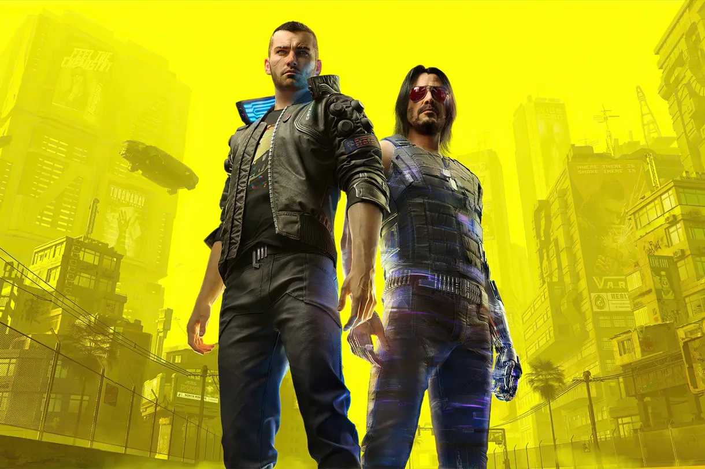
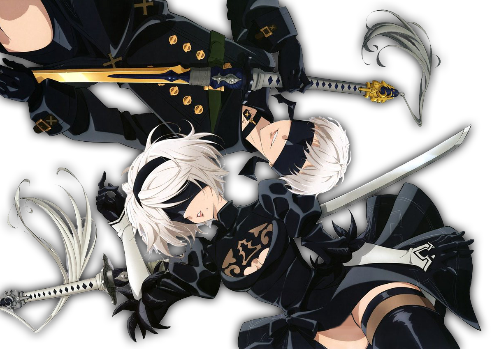
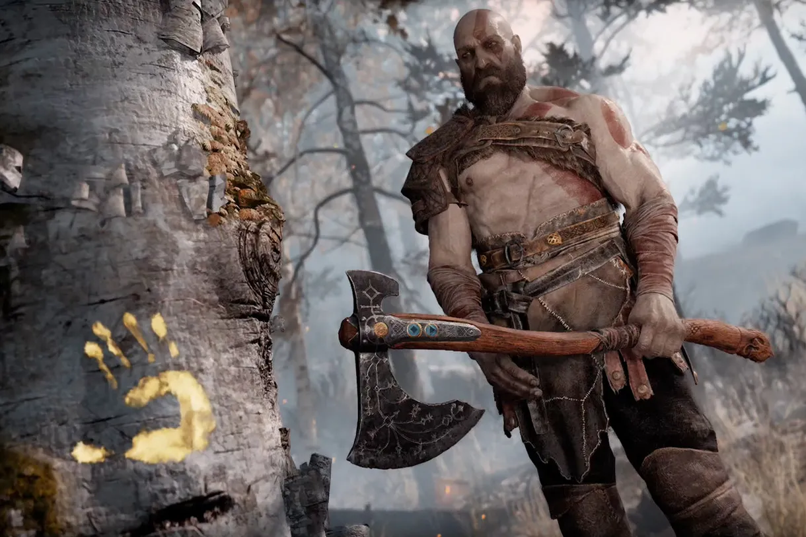
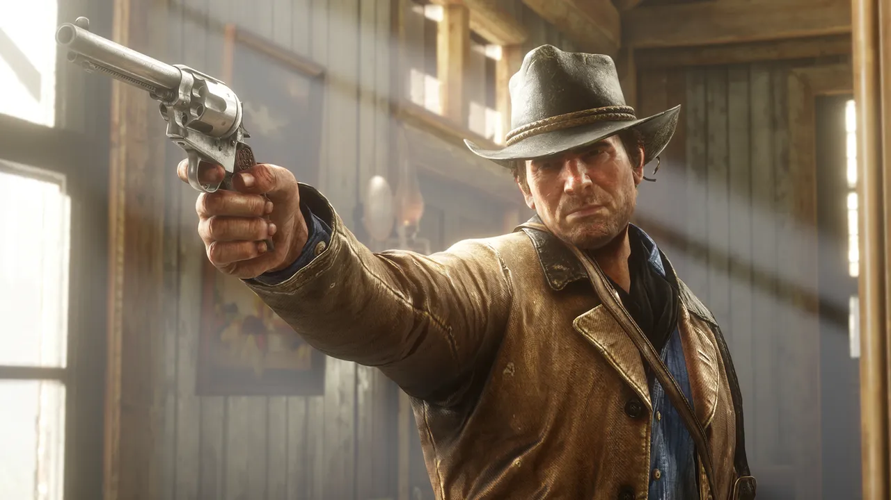

Characters
Characters in videogames zijn veel uitgebreider dan je denkt. Een spel word zoveel beter en diepgaander met goede characters. Dit is vaak vooral van toepassing op side characters / "deuteragonists". De reden hiervoor is dat de protagonists vaak toch wel "goed" geschreven worden omdat ze het focale punt van het spel zijn. Maar wanneer er ook met heel veel aandacht en tijd naar de side characters gekeken word merk je pas echt hoe goed het spel kan zijn en word de ervaring zoveel leuker en beter. Op deze pagina ga ik een aantal van mijn favoriete characters benoemen (de meeste komen uit spellen die hiervoor genoemd zijn), en waarom ik hen zo leuk/goed geschreven vind. De characters die ik ga behandelen zijn: V en Johnny Silverhand, 2B en 9S, Kratos, en tot slot, Arthur Morgan.
-
V en Johnny Silverhand (Cyberpunk2077)
In cyberpunk kan je kiezen of je een vrouwelijke of mannelijke protagonist (genaamd V) bent, dit beinvloed het verhaal of hun karakter echter helemaal niet. Ik vind persoonlijk de voice actress van vrouwelijke V beter, en de voice acting in het spel is fantastisch, ook van johnny (gespeeld door keanu reeves btw). Wat V en Johnny nou zo goed maakt in mijn ogen is niet alleen hun ontzettend complexe en evoluerende relatie, ook V zelf is gewoon een goed karakter. De struggle die zij met zichzelf heeft niet alleen door johnny en haar daarbijkomende ziekte, maar ook door haar verleden en de keuzes die ze moet maken in het spel. Het is een van de meest complexe en goed geschreven characters die ik ooit heb gezien. Wat johnny betreft valt er misschien nog wel meer te zeggen over wat hem zo goed maakt. Hij zit eigenlijk onvrijwillig opgesloten in het hoofd van V, maar probeert er mee te leven en is ondanks zijn roekeloze en ruige personaliteit toch ook heel wijs.
-
2B en 9S (NieR:Automata)
net als bij johnny en V, is de relatie tussen 2B en 9S ook een van de sterkste punten van hun karakter. Maar wat hun karakters nou nog zoveel mooier en diepgaander maakt is het punt van het spel zelf, dat ze eigenlijk in de eerste instantie sowieso geen emoties/gevoelens horen te hebben, niet voor elkaar maar ook niet voor wat dan ook. Maar nu ze dat toch hebben| zie je eigenlijk best wel een complexe karakterontwikkeling. Niet alleen heeft ze de gemene/serieuze kant van haarzelf, maar ook de lieve, verzorgende en emotionele kant van haarzelf, waar ze mee worstelt omdat ze dat eigenlijk niet hoort te voelen. 9S is eigenlijk precies het tegenovergestelde van 2B wat dat betreft. Hij vind het alleen maar tof en leuk dat hij lief en grappig naar 2B kan doen. Maar naarmate het spel vordert merkt hij dat die gevoelens hem toch eigenlijk geen goed doen, en word hij er alleen maar overstuur van. Precies het omgekeerde van 2B duss
-
Kratos (God of War)
Zoals hiervoor verteld, probeert kratos zijn geweldadige verleden te ontvluchten en een nieuw leven te zoeken, mede omdat hij een zoon heeft gekregen en zijn eerste kinderen verloren was. Maar het word kratos niet makkelijk gemaakt. Nu hij moet kiezen tussen zijn verleden ontvluchten, of gaan vechten tegen het noorse pantheon, moet hij afwegingen maken om niet in zijn verleden te vervallen maar ook zijn zoon te beschermen van het noorse pantheon. Dit is een van de redenen waarom ik kratos zo'n goed karakter vind, hij is niet alleen een onverslaanbare godendoder, maar ook een vader die zijn zoon wil beschermen ondanks zijn ingewikkelde situatie.
-
Arthur Morgan (Red Dead Redemption 2)
Ook arthur morgan is een extreem welgeschreven karakter. Een deel van het spel is zelfs ingericht puur om de speler ruimte te geven om zelf een pad te kiezen voor arthurs persoonlijke karakterontwikkeling. Je hebt namelijk een "honor systeem" in het spel, waarbij je keuzes die je maakt invloed hebben op hoe mensen je zien, en hoe je zelf bent. Je kan er bijv. voor kiezen om een outlaw te zijn en mensen te beroven, vermoorden, en te intimideren. Maar je kan er ook voor kiezen om een "good guy" te zijn en mensen te helpen, te doneren aan de armen, enz. Dit heeft invloed op hoe mensen je zien, en hoe je het spel beeindigt. Ook dialoog verandert aan de hand van of je een high- of low honor stijl van spelen volgt. Dit geeft de speler eigenlijk zelf ruimte om de karakterontwikkeling van arthur te bepalen wat ik een heel mooi aspect van het spel vind.